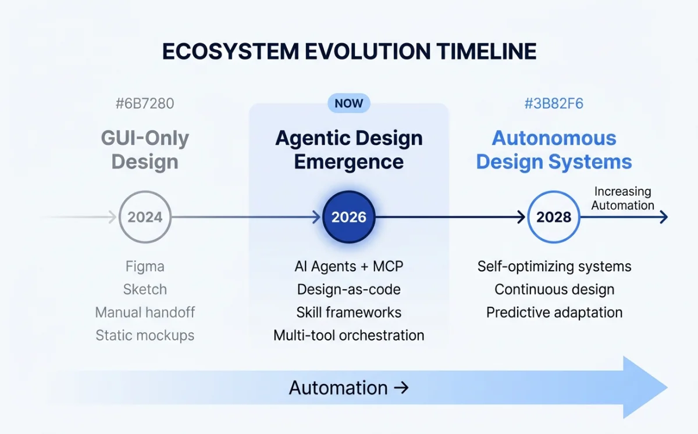
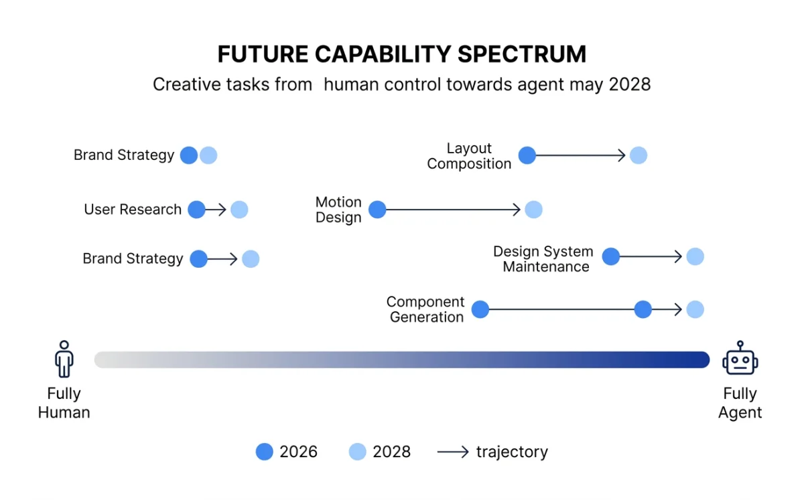

Where We Are: The State of Agentic Design in May 2026
A snapshot of the ecosystem at the time of writing.

Paper launched its Desktop app in February 2026, becoming the first connected design canvas with an MCP server that works with any agent: Claude Code, Codex CLI, Cursor, GitHub Copilot, OpenCode, Windsurf, Cline, and Continue. According to Paper's published case studies and marketing materials, production users include Vercel, Perplexity, PostHog, Tailwind CSS, Dub, Replicate, Zed, and Attio.
Open Design hit 43.6k GitHub stars in under two weeks after launch, according to public GitHub data --- reportedly the fastest growth for an open-source design tool. It supports 16 CLI agents and ships 129 design systems as portable Markdown files.
OpenPencil shipped Concurrent Agent Teams: multiple AI agents working on different sections of the same canvas simultaneously. It is the first open-source vector design tool built around the agent as the primary user. At 3.1k stars as of May 2026, it is smaller but evolving fast.
Huashu Design relicensed to MIT on May 14, 2026, signaling that the open-source design skill ecosystem is maturing. At 14.1k stars as of May 2026 (according to public GitHub data), it remains the most specialized tool in the stack --- an HTML-native design skill with anti-AI-slop enforcement and a 5-dimension self-critique system.
Hyperframes (19k stars as of May 2026, by HeyGen) and Remotion (47.1k stars according to public GitHub data) represent the two poles of agent-driven video production. Hyperframes is HTML-native and agent-first. Remotion is React-based and mature.
Four major agent platforms compete: Claude Code, Codex CLI, OpenCode, and Gemini CLI. All four support MCP. MCP itself has become the universal connector between agents and design tools --- Paper, Pencil, OpenPencil, Figma, Miro, and MagicPattern all ship MCP servers as of May 2026.
| Tool | Stars (May 2026, per public GitHub data) | Key Milestone | Agent-Native? |
|---|---|---|---|
| Remotion | 47.1k | v4.0.462, mature framework | No (React-based) |
| Open Design | 43.6k | Fastest-growing open-source design tool | Yes |
| Hyperframes | 19k | 137 releases, 50+ catalog blocks | Yes |
| Huashu Design | 14.1k | MIT relicensed May 2026 | Agent-agnostic skill |
| OpenPencil | 3.1k | Concurrent Agent Teams shipped | Yes |
| Paper | Commercial | Desktop launched Feb 2026 | Yes |
| Pencil | Commercial | .pen format, IDE integration | Partial (MCP server) |
Trend 1: Autonomous Design Systems
Design systems are becoming self-maintaining. This is the most consequential trend in the ecosystem, and it is happening faster than I expected.
Consider the current state. Open Design's library contains 129 design systems, each expressed as a DESIGN.md file --- a portable Markdown specification that any agent can read and apply. These are not static theme JSON files. They are living documents that agents interpret, enforce, and update. When a token changes in the DESIGN.md, the agent applies the change across every artifact it generates.
OpenPencil's Design System Kit takes this further. It manages reusable UIKits with style switching and component composition. A team can define Light, Dark, and High Contrast themes as variable sets inside a single .op file. Switching themes is a variable swap, not a redesign.
Paper's bi-directional workflow closes the loop. A designer changes a token value in Paper. The agent reads the change via MCP and updates the CSS custom properties in the codebase. A developer changes a spacing value in Tailwind config. The agent reads the change in Git and updates the Paper design. No manual sync. No drift.
The trajectory is clear. Based on publicly available information, GitHub's design team has reportedly signaled a shift away from maintaining separate component libraries, moving toward treating the codebase as the single source of truth. The direction is unambiguous: translating code components to design is becoming a single-prompt operation.
The vision for 2027: design systems that auto-detect token drift between design and code, flag the discrepancy, and offer to auto-fix. The human approves or rejects. The agent handles the mechanical synchronization that currently eats hours of design systems team time every sprint.
Trend 2: Real-Time Collaborative Agents
The second trend: multiple agents and multiple humans working on the same design surface simultaneously. Not asynchronously through Git. In real time.
Paper already has real-time multiplayer. You share a URL, your team members see changes live. But the multiplayer is human-only today. The agent participates through MCP, which is stateless --- it reads and writes but does not observe live.
OpenPencil's Concurrent Agent Teams point toward the future. Three agents working on different sections of the same canvas, coordinated by an orchestrator. This is parallel execution, not real-time collaboration. But it proves the spatial decomposition pattern: complex designs can be split into independent sub-tasks, assigned to different agents, and merged.
Open Design takes a different approach to the same problem. It auto-detects 16 CLI agents on your PATH and lets you swap between them with one click. This is agent portability, not agent collaboration. But it establishes the principle that the design tool should be agent-agnostic --- it should not care which agent you use.
The convergence point, likely in late 2027: a design canvas where one human and two agents are working on different sections at the same time, with live cursors showing where each participant is active. The human designs the hero section. Agent A generates responsive variants. Agent B synchronizes tokens with the codebase. All three changes appear in real time.
The orchestrator pattern from Chapter 11 becomes the standard architecture for this. An orchestrator agent decomposes the design task, assigns spatial sub-tasks to worker agents, and merges the results. The human acts as creative director, intervening when the agents produce something off-brand.
Trend 3: Design and Code as a Single Artifact
The third trend is the most fundamental. Design and code are converging into a single artifact. Not "design that exports to code." Not "code that renders a preview." A single artifact that IS both design and code simultaneously.
Paper is the clearest example. Paper's canvas is built on real HTML and CSS. When you design in Paper, you are writing HTML and CSS. There is no translation layer. The get_jsx tool does not convert a proprietary format into JSX --- it extracts JSX from a surface that is already HTML. The write_html tool goes the other direction, but it is writing to the same format.
This is different from Figma's model. Figma stores designs in a proprietary WebGL format. Developers and agents need to translate that format into production code. Paper's approach is the inverse: its native format is already close to production code, making it inherently agent-friendly. There is no translation step because the design surface speaks the same language as the output.
Pencil's .pen files and OpenPencil's .op files are intermediate steps on the same path. They are code artifacts --- plain text, diffable, version-controllable. A pull request can include changes to a .pen file alongside changes to a .tsx file. The reviewer sees both the design change and the code change in the same diff. But .pen and .op files are still separate formats that need translation to production code.
| Approach | Tool | Format | Translation Layer | Diffable? |
|---|---|---|---|---|
| Design IS code | Paper | HTML/CSS | None | Yes (native HTML) |
| Design-as-code artifact | Pencil | .pen (JSON) | Required (pen → JSX) | Yes (plain text) |
| Design-as-code artifact | OpenPencil | .op (JSON) | Required (op → multi-platform) | Yes (plain text) |
| Proprietary canvas | Figma | WebGL binary | Required (fig → anything) | No |
The end state: a world where there is no "design file" and "code file." There is one file. It renders visually in a canvas tool and compiles to production code. The distinction between designer and developer roles blurs because the artifact is the same.
Multiple voices in the ecosystem are converging on this idea. The future of code is design, and the best design work emerges from a canvas --- not a code editor. At the same time, code is a poor interface for spatial problems, and chat is a poor interface for systemic decisions. The canvas --- not the code editor, not the chat window --- is the correct interface for design work. But the canvas must produce code, not pixels.
My take: The design-code convergence is inevitable, but the timeline is uncertain. Paper's HTML-native approach is the most pragmatic path I see. Proprietary canvas formats (Figma, Sketch) will either open up or become liabilities. The .pen and .op formats are stepping stones --- useful now, but ultimately unnecessary if the design surface speaks the same language as production code.
Trend 4: The Rise of Agent-Native Design Tools
The fourth trend is the emergence of design tools built from the ground up for agent collaboration. Not legacy tools with AI features bolted on. Tools where the agent is the primary user and the human is the creative director.
Paper was the first tool built from scratch for agent collaboration via MCP. Every tool in Paper's MCP server --- get_selection, get_jsx, get_computed_styles, write_html --- was designed for agent consumption, not human clicking. The human uses the visual canvas. The agent uses the MCP API. Both work on the same artifact.
OpenPencil calls itself "the world's first open-source AI-native vector design tool." The agent can create shapes, apply styles, manage components, and export to code --- all through MCP tools, without a human touching the canvas. The Agent Teams feature extends this: the canvas is partitioned into spatial regions, and each agent works independently.
Open Design is agent-native in a different sense. There is no canvas. The agent IS the design engine. You give it a prompt, it asks clarifying questions, picks a visual direction, and builds the artifact. The output is the design. There is no intermediate visual surface.
Hyperframes is explicit about its positioning: "Built for agents." Its HTML-native authoring format and non-interactive CLI are designed for agent consumption, not human editing. The 50+ catalog blocks are pre-built agent actions --- composable units that an agent can assemble without understanding animation principles.
The key differentiator across all these tools: the format. Tools where agents read and write the same format as production (HTML, CSS, JSX) have a structural advantage over tools where agents must translate between formats. Paper's get_jsx works because the canvas IS HTML. Figma's MCP server works, but every read requires format translation.
Legacy tools are responding. Figma shipped an MCP server in early 2026. It works. But retrofitting agent support onto a proprietary canvas format is fundamentally different from building for agents from the start. The MCP server can read designs and export code, but the format translation introduces information loss and complexity that agent-native tools avoid.
Predictions for 2027-2028
Specifying predictions with timestamps so you can hold me accountable.

| Prediction | Timeline | Confidence | Signal Today |
|---|---|---|---|
| MCP servers ship as table stakes for every design tool | By Q4 2026 | High | 6 tools already have MCP; Figma added one in early 2026 |
| Design files disappear as a concept --- .pen and .op become code artifacts reviewed in PRs | By mid 2027 | Medium | Pencil and OpenPencil already Git-integrated; Paper is HTML-native |
| Agent Teams are standard for complex design tasks | By late 2027 | Medium-High | OpenPencil already ships Concurrent Agent Teams |
| The "design handoff" dies --- design IS code | By 2028 | Medium | Paper's bi-directional workflow, GitHub treating codebase as source of truth |
| Design systems auto-detect and auto-fix token drift | By late 2027 | Medium | Paper's token sync, Open Design's DESIGN.md schema |
| Figma either opens its format or loses market share to agent-native alternatives | By 2028 | Low-Medium | Community reportedly switching to Paper; Paper's case studies list Vercel/Perplexity/PostHog |
| Video production becomes a standard design skill, not a specialist discipline | By mid 2027 | High | Hyperframes 50+ blocks, Huashu Design MP4 export, Remotion Lambda |
| The designer role shifts from pixel-pusher to agent director and design system architect | Ongoing through 2028 | High | Reportedly already happening in teams using Paper and Open Design |
The prediction I am most confident about: MCP becomes universal by late 2026. Every design tool that wants to remain relevant will ship an MCP server. The ones that do not will become niche. This is not a bold prediction --- it is an observation of a trend that is already well underway at the time of writing.
The prediction I am least confident about: Figma's trajectory. Figma has enormous institutional momentum, deep enterprise contracts, and a generation of designers trained on its interface. Its MCP server, shipped in early 2026, shows awareness of the agent trend. But its proprietary canvas format is a growing liability in an agent-native world. Whether Figma opens its format or doubles down on proprietary lock-in will determine its trajectory.
Risks: Homogenization, Over-Reliance, and the Designer's Role
The trends are real. The predictions are grounded in observable signals. But the trajectory is not guaranteed. Several risks could undermine the whole ecosystem.
Quality homogenization. This is the risk I hear about most from design leaders. A prominent design executive puts it bluntly: the more companies talk about coding with agents and designing in code, the worse their UX tends to be. A design tool founder agrees: if you are building software meant to be consumed by humans, take the time to actually design it. AI has a design smell because it is "designing" via code, not through spatial reasoning.
The "AI design smell" is real. Huashu Design's anti-slop rules list the specific patterns: purple gradients, emoji icons, rounded-corner-plus-left-border-accent, SVG humans, Inter-as-display-font. When every agent generates from the same model weights without constraint, the output converges. Every startup's landing page starts to look the same.
The mitigation is clear but not easy. Strong design systems with custom tokens. Agent skills with anti-slop enforcement. Human creative direction at every step. The tools that bake these constraints into the workflow --- Huashu Design, Open Design --- will matter more than the tools that leave output quality to the model.
Over-reliance on agents. The warning from experienced practitioners is consistent: no agent replaces design judgment. Tools can accelerate execution, but the craft of design --- the spatial reasoning, the taste, the ability to hold ambiguity --- remains human. When designers treat agents as creative substitutes rather than execution engines, the quality drops.
Agents cannot read between the lines. They cannot hold ambiguity. They cannot make judgment calls about what matters and what does not. They execute instructions. When the instructions are clear and specific, the output is good. When the instructions are vague or absent, the output is generic.
The risk is not that agents replace designers. The risk is that designers lose craft skills as agents handle more execution. When execution becomes cheap, the temptation is to skip the spatial phase of thinking entirely. The bottleneck moves upstream --- it becomes a question of mind, not mechanics. The designer's value shifts from execution to spatial thinking, creative direction, and taste. But if designers stop practicing spatial thinking because agents handle the rendering, the taste atrophies.
My take: The homogenization risk is the one I worry about most. I have seen agent-generated designs that are technically correct and aesthetically empty. The tools will get better at avoiding AI slop, but the underlying problem is cultural: when execution becomes free, the temptation to skip thinking is overwhelming. The designers who thrive in this new landscape will be the ones who treat agents as execution engines, not creative partners. The creative work stays human.
The designer's changing role. A creative tool founder frames it directly: designers should be racing to get as close to the product as possible. The role is shifting from pixel-pusher to agent director, design system architect, and quality curator.
This shift creates opportunity and anxiety in equal measure. The designers who embrace agentic workflows gain leverage --- they produce more output, iterate faster, and ship with higher consistency. The designers who resist or ignore the shift find their skills depreciating as the industry moves to agent-native tools.
A design engineer captures the human advantage: if AI can think better and software can scale wider, then the scarce thing is the particular, messy way a human mind cares about something. Agents do not care. They execute. The caring --- the judgment about what is good, what is worth building, what matters to users --- stays human.
Other risks worth watching. Vendor lock-in: tools that require specific agents or models create dependency. Cost: API token usage for agent-driven workflows adds up, especially for video generation and multi-agent teams. Reliability: agents hallucinate tool calls, lose MCP connections on long sessions, and degrade on large tasks. Security: agents with write access to design files and code repositories need permission models, and those models are still immature. Accessibility: if agents generate code without a11y enforcement, digital exclusion worsens.
| Risk | Severity | Current Signal | Likely Mitigation |
|---|---|---|---|
| Quality homogenization | High | AI design smell in agent-generated output | Anti-slop rules, custom design systems, human curation |
| Craft skill atrophy | Medium-High | Designers skipping spatial thinking phase | Education, deliberate practice, canvas-first workflows |
| Vendor lock-in | Medium | Tools requiring specific agents or models | Open-source alternatives, MCP standardization |
| API cost at scale | Medium | Token costs for video and multi-agent teams | Model efficiency improvements, local models |
| Agent reliability | Medium | Hallucinated tool calls, dropped MCP connections | Better tool validation, session recovery protocols |
| Security surface area | Medium | Agents with write access to design and code | Permission models, sandboxed execution, audit logs |
| Accessibility regression | High | Agents generating code without a11y enforcement | Automated a11y testing in agent loop (covered in Chapter 12) |
These risks are not theoretical. I encountered agent hallucination, MCP connection drops, and security permission issues in the case studies covered in Chapter 13. The ecosystem will address some of these. Others will persist.
My take: I am optimistic about the trajectory but realistic about the timeline. The tools covered in this book are version 1.0 of agentic design. The MCP protocol is young. The skill ecosystem is nascent. The permission models are thin. But the direction is clear: design and code are converging, agents are becoming collaborative, and the canvas is returning as the primary interface for creative work. The designers who learn to direct agents --- not just use them --- will define the next decade of product design.
Next: This chapter concludes the main content of the book. Appendix A provides a comprehensive tool comparison matrix for quick reference. Appendix B contains the full MCP server reference. Appendix C offers a prompt library organized by design task.